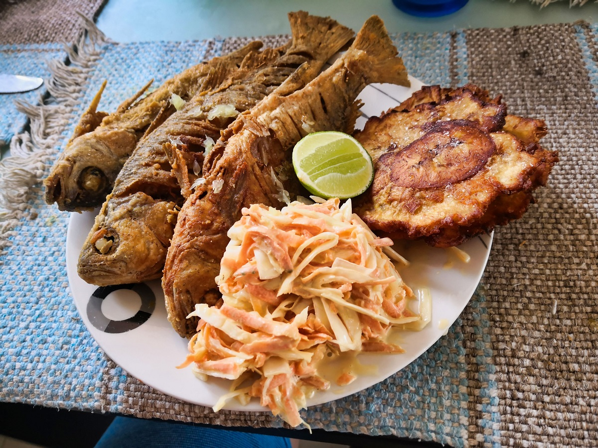
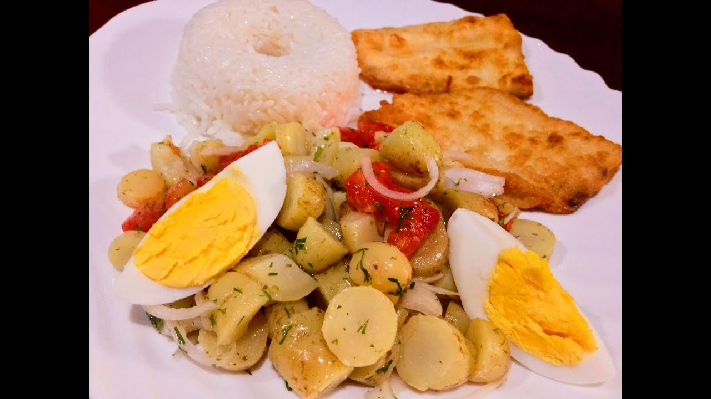
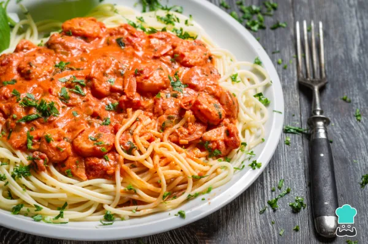
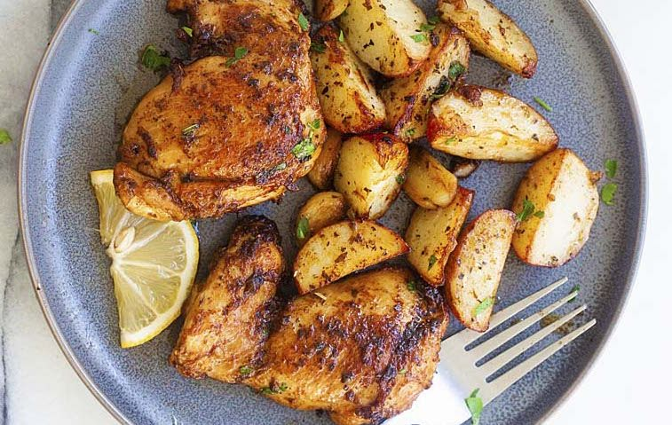
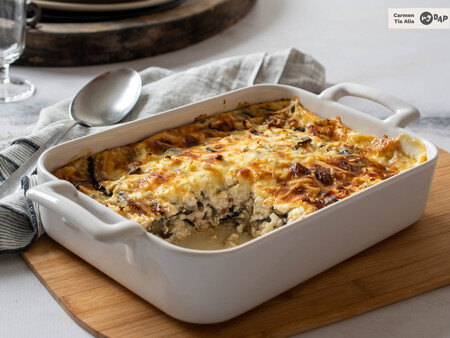

Loading...
Recetas
Pure de Yuca,Carne,Zapallo y Aguacate
Ingredientes
- 2 pedazos de yuca cruda cortada en trozos pequeños
- Un filete de carne cruda de res
- Sal al gusto
- (1/4) de una taza de zapallo cortado en trozos pequeños
- La mitad de aguacate maduro cortado en trozos pequeños.

Pasos
- En una olla con agua, cocinar la carne, con una pizca de sal (si es necesario puede utilizar la cáscara de papaya, del lado de la fruta, sobre la carne por diez minutos para que se suavice).
- En una olla con agua, cocinar el zapallo y la yuca con un poco de sal, hasta que se suavicen todos los alimentos.
- Escurrir los alimentos en un cernidor
- Aplastar con un tenedor el zapallo y la yuca, por separado, hasta que se forme un puré.
- Desmenuzar finamente la carne. (si es necesario puede utilizar un trinche para que no se queme)
Pure de Arroz, Vainitas y Huevo
Ingredientes
Para 6 personas
- Media taza de arroz crudo.
- 6 vainitas cortadas en trozos.
- La cuarta parte de una cebolla perla
- La tercera parte de un huevo cocido.
- Media cucharadita de aceite vegetal (maíz o girasol)
- Sal al gusto

Pasos
- En una olla con agua, cocinar el huevo hasta que esté duro, utilizar la tercera parte de un huevo cocido. (No es necesario que coloque sal en el huevo)
- En una olla con agua, cocinar las vainitas, la cebolla y el arroz, hasta que se suavicen todos los alimentos con una pizca de sal.
- Escurrir los alimentos en un cernidor
- Aplastar con un tenedor, por separado,hasta que se forme un puré.
- Poner media cucharadita de aceite sobre la preparación.
Puré de Zanahoria Blanca con Pollo
Ingredientes
- La 1/4 de una zanahoria blanca cortada en trozos pequeños
- Un filete de pollo cortado en trozos pequeños
- Media cucharadita de aceite vegetal (maíz o girasol)
- Sal al gusto

Instrucciones
- En una olla con agua y una pizca de sal, cocinar el pollo por diez minutos, luego agregar los trozos de zanahoria blanca y cocinar hasta que se suavicen todos los alimentos.
- Escurrir los alimentos en un cernidor.
- Aplastar con un tenedor, por separado, hasta que se forme un puré.
- Rallar o desmenuzar el pollo.
- Poner media cucharadita de aceite sobre la preparación.
Papa, Brócoli y Carne
Ingredientes
- Media papa mediana cortada en trozos pequeños
- Un pedazo de brócoli picado en trozos pequeños
- Un dedazo de carne de res cortada en trozos pequeños
- Media cucharadita de aceite vegetal (maíz o girasol)
- Sal al gusto
Instrucciones
- En la licuadora agregar la leche condensada, la leche líquida, el hielo y el coco rallado y licuar hasta que el hielo quede granizado.
- Servir en vasos agregando canela al gusto.
- ¡Listo! Ahora puedes disfrutar de una deliciosa bebida de coco. ¡Buen provecho!
Plátano Verde, Pescado y Zanahoria
Ingredientes
- 2 pedazos de plátano verde cortado en trozos pequeños
- Un pedazo de pescado
- Un pedazo de zanahoria amarilla picada en trozos pequeños
- Sal al gusto

Instrucciones
- Pelar el plátano verde y, en una olla con agua y sal, cocinar por diez minutos.
- Luego, cocinar la zanahoria en la misma agua.
- Cocinar el pescado en una sartén, con poca agua y colocar una pizca de sal.
- Desmenuzar el pescado, con mucho cuidado para no dejar ningún hueso.
- Cortar finamente el plátano verde y la zanahoria.
Arroz, Arvejas y Pollo
Ingredientes
- 2 cucharadas de arroz crudo
- 1/2 taza de arvejas
- 1 filete de pollo cortado en trozos pequeños
- Media cucharadita de aceite vegetal (maíz o girasol)
- Sal al gusto

Instrucciones
- En una olla con agua, cocinar el arroz.
- En otra olla con agua, cocinar las arvejas, el pollo y una pizca de sal por cinco minutos.
- Escurrir los alimentos en un cernidor.
- Desmenuzar el pollo y aplastar con un trinche las arvejas hasta que tengamos una consistencia de puré.
- Poner media cucharadita de aceite sobre la preparación.
Mellocos, Pollo y Huevo
Ingredientes
- La 1/3 parte de una taza de mellocos
- Un filete de pollo cortado en trozos pequeños.
- 1/3 parte de un huevo cocido.
- Media cucharadita de aceite vegetal (maíz o girasol)
- Sal al gusto

Instrucciones
- Cocinar el huevo hasta que esté duro.
- En una olla con agua, cocinar los mellocos, hasta que se suavicen.
- Escurrir en un cernidor
- Cocinar el pollo en una sartén, con poca agua y colocar una pizca de sal.
- Desmenuzar el pollo y cortar finamente los mellocos y huevo.
- Poner media cucharadita de aceite sobre la preparación.
Fideo, Carne y Tomate Riñón
Ingredientes
- La 1/3 de una taza de fideo pequeño
- Un filete de carne de res cortada en trozos pequeños
- Un tomate riñón picado en cuadros pequeños
- Media cucharadita de aceite vegetal (maíz o girasol)
- Sal al gusto

Instrucciones
- En una olla con agua, cocinar el fideo con una pizca de sal.
- Cocinar la carne con una pizca de sal en un sartén con poca agua. Escurrir en un cernidor.
- Pelar el tomate, porque la cáscara es muy ácida para los niños.
- Desmenuzar la carne, y cortar finamente el tomate riñón y el fideo.
- Poner media cucharadita de aceite sobre la preparación.
Zapallo, Hígado de Pollo y Arroz
Ingredientes
- Una taza de zapallo
- Medio plato de hígado de pollo
- Media taza de arroz
- Sal al gusto
Instrucciones
- En una olla con agua, cocinar el zapallo hasta que esté blando.
- Cocinar el hígado de pollo con una pizca de sal en una olla, con agua, por diez minutos.
- Escurrir en un cernidor.
- Cortar en trozos pequeños el hígado de pollo.
- Cortar finamente el zapallo.
Pollo, Arroz y Lenteja
Ingredientes
- Un filete de pollo cortado en trozos pequeños
- Media taza de arroz
- Media taza de lenteja
- Sal al gusto
Instrucciones
- En una olla con agua, cocinar el pollo, el arroz y la lenteja con una pisca de sal.
- Escurrir en un cernidor.
- Cortar el pollo en trozos muy pequeños.
Yuca, Pescado y Garbanzo
Ingredientes
- Media taza de yuca
- Pescado cortado en trozos pequeños
- Media taza de garbanzo seco
- Media cucharadita de aceite vegetal (maíz o girasol)
- Sal al gusto
Instrucciones
- En una olla con agua, cocinar la yuca y el garbanzo.
- Cocinar el pescado con una pizca de sal en un sartén, con poca agua, por cinco minutos.
- Cortar el pescado, con mucho cuidado para no dejar ningún hueso.
- Cortar el garbanzo por la mitad y la yuca en trozos muy pequeños.
- Poner media cucharadita de aceite sobre la preparación.
Fideo, Lenteja y Carne
Ingredientes
- Media taza de fideo
- Media taza de lenteja
- Un filete de carne de res cortada en trozos pequeños
- Media cucharadita de aceite vegetal (maíz o girasol)
- Sal al gusto
Instrucciones
- En una olla con agua, cocinar la carne con una pizca de sal.
- Cocinar la lenteja y el fideo por separado, hasta que se suavicen todos los alimentos.
- Escurrir en un cernidor.
- Cortar la carne en trozos muy pequeños.
- Poner media cucharadita de aceite sobre la preparación.
Carne, Choclo, Vainitas, Zanahoria y Arroz
Ingredientes
- Un filete de carne cortada en trozos pequeños
- Media taza de choclo
- Media taza de vainitas
- Media taza de zanahoria
- Media taza de arroz
- 1/4 parte de un aguacate

Instrucciones
- Cocinar la carne con una pizca de sal en una sartén, con poca agua.
- En una olla con agua, cocinar el choclo, las vainitas y la zanahoria, hasta que se suavicen.
- Escurrir en un cernidor.
- En otra olla con agua, cocinar el arroz con una pizca de sal.
- Cortar la carne, las vainitas y la zanahoria en trozos muy pequeños.
Pescado, Plátano Verde y Pepinillo
Ingredientes
- Media taza de pescado cortado en trozos pequeños
- Medio pepinillo cortado en trozos pequeños
- Media taza de plátano verde cortado en trozos pequeños
- Media cucharadita de aceite vegetal (maíz o girasol)
- Sal al gusto

Instrucciones
- En una olla con agua, cocinar el plátano verde.
- Cocinar el pescado con una pizca de sal en una sartén, con poca agua, por cinco minutos.
- Escurrir en un cernidor.
- Cortar el pescado y el plátano verde en trozos muy pequeños.
- Cortar el pepinillo y agregar un poco de limón y sal al gusto.
- Poner media cucharadita de aceite sobre la preparación.
Pollo y Papa
Ingredientes
- Media taza de papas cortadas en trozos pequeños
- Un filete de pollo cortado en trozos pequeños
- Sal al gusto

Instrucciones
- En una olla con agua, cocinar las papas con una pizca de sal.
- Cocinar el pollo con una pizca de sal en una sartén, con poca agua por cinco minutos.
- Escurrir en un cernidor.
- Cortar el pollo y las papas en trozos muy pequeños.
Puré de Papa, Zanahoria y Hígado de Pollo
Ingredientes
- 1/3 parte de una papa mediana, picada en trozos pequeños
- Media zanahoria amarilla, picada en trozos pequeños
- La 1/3 parte de hígado de pollo
- Media cucharadita de aceite vegetal (maíz o girasol)
- Sal al gusto
Instrucciones
- En una olla con agua, cocinar el hígado de pollo con una pizca de sal y la zanahoria por 10 minutos, agregar los trozos de papa.
- Cuando la zanahoria y la papa estén suaves, escurrir todos los alimentos.
- Separar la papa, la zanahoria y el hígado, aplastar con un tenedor hasta que se forme un puré.
Puré de Morocho y Espinaca
Ingredientes
- Media taza de morocho crudo
- 1/4 parte de una taza de espinaca
- Media cucharadita de aceite vegetal (maíz o girasol)
- Sal al gusto
Instrucciones
- En una olla con agua, cocinar el morocho con una pizca de sal.
- Cocinar la espinaca con una pizca de sal por separado.
- Escurrir los alimentos en un cernidor.
- Aplastar con un tenedor, por separado, hasta que se forme un puré.
- Poner media cucharadita de aceite sobre la preparación.
Sopa de Avena
Ingredientes
- 3/4 de taza de avena en hojuela
- 1/2 taza de zanahoria, pelada y picada en cubos
- 1/4 de taza de cebolla perla, picada en cubos pequeños
- 1 diente de ajo, picado
- 1/2 taza de arvejas, precocidas
- 2 papas grandes, picadas en trozos pequeños
- Sal al gusto
Instrucciones
- Coloca en un sartén seco a temperatura media-alta, las hojuelas de avena y tuéstalas hasta que se doren.
- Coloca en una olla mediana el aceite y llévala a fuego medio, una vez caliente cocina la cebolla, ajo, zanahoria y arvejas. Una vez la cebolla translucida aumenta 4 tazas de agua.
- Continúa cociendo la sopa hasta que las papas estén suaves.
Brócoli en Crema
Ingredientes
- La mitad de brócoli, cortado en unidades pequeñas
- 1/2 taza de queso rallado
- 1 cucharada de mantequilla
- Sal al gusto
Instrucciones
- Cocina el brócoli en el agua hirviendo durante 1 minuto con una pizca de sal, retira del agua y corta la cocción colocando el brócoli bajo el agua fría o un baño con hielo.
- Coloca el brócoli en un refractario apto para horno, coloca el queso sobre el brócoli y baña con la salsa de pollo termina con queso parmesano.
- Lleva a un horno suave hasta que el queso se derrita y la salsa espese un poco más.
Pastel de Berenjena
Ingredientes
- Una berenjena grande
- Una papa cocida
- Pimientos de piquillo
- Tomates cherry
- Un pedazo de queso
- 1/2 de una cebolla
- Media taza de nata líquida
- Una cucharada de mantequilla
- Aceite de oliva
- Sal al gusto

Instrucciones
- Corta la berenjena en rodajas finas y fríela en aceite de oliva durante unos minutos en una sartén. Retira y deja enfriar.
- En tanto, corta la cebolla a la juliana y rehógala en la misma sartén. Retírala.
- Quítale la piel a la patata cocida y tritúrala. Mezcla con mantequilla y nata líquida para hacer un puré casero.
- Coloca en una bandeja de horno las rodajas de berenjena, añade el puré de patata y por último, agrega la cebolla.
- Añade unas rodajas de queso de cabra, el pimiento cortado en tiras y los tomates cherry. Salpimienta y agrega el orégano.
- Mételo al horno durante unos 5 minutos a 180 grados hasta que el queso gratine. Sácalo y estará listo para comer.
Galería de Imágenes


Comentarios
Deja tus comentarios, envíanos tus recomendaciones por correo electrónico.
© 2024. Todos los derechos reservados.
Desarrollado por: Estudiantes ITSQMET